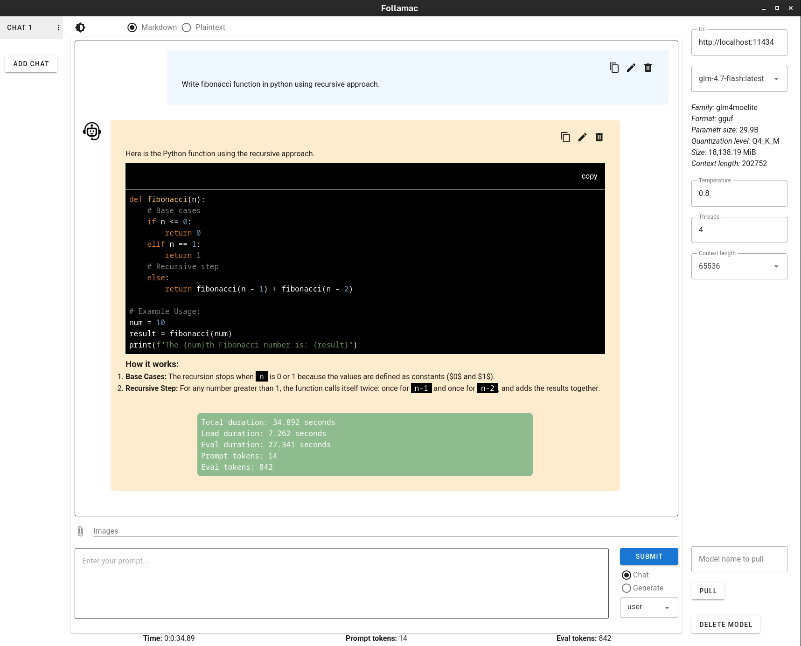

Follamac is a desktop application that provides a convenient way to work with Ollama and large language models (LLMs).
Linux AppImage 0.1.3 or Mac arm64 dmg 0.1.3 or Windows portable 0.1.3
Source code is hosted on https://github.com/pejuko/follamac/